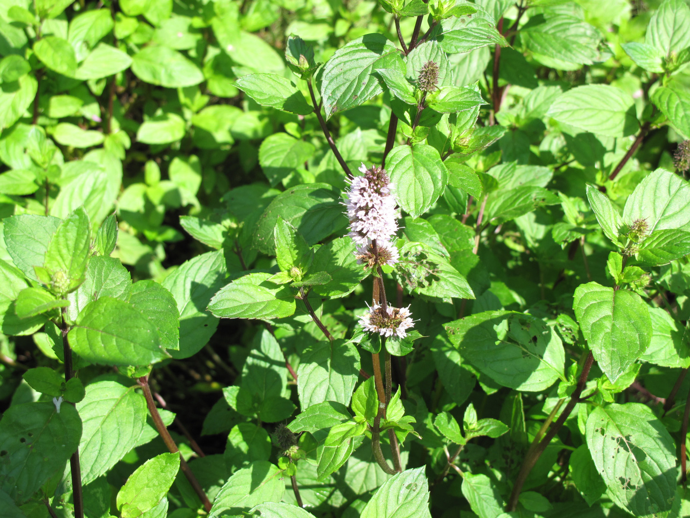

Mentha × piperita
| common name | peppermint | |
| en español | menta piperita | |
| name in Āyurveda | pudinā (पुदिना) | |
| name in TCM | bò he (薄荷) | |
| plant family | Lamiaceae (mint) | |
| parts used | fresh and dried leaves |

from Wikimedia Commons by Laval University, CC BY-SA 4.0
{kind=link}
{kind=link}
observations/description
dried leaves
- deep but slightly muted green color, some browning
- intense, cooling methol aroma
- aroma immediately activates the upper chest region and sinuses
- very lifting; draws focus/attention/alertness
"Peppermint", Wikipedia
- smooth stems, square in cross section
- dark green leaves with reddish veins, with an acute apex and coarsely toothed margins
- flowers are purple, produced in whorls around the stem, forming thick, blunt spikes
distribution/conservation status
"Peppermint", Wikipedia
- indigenous to Europe and the Middle East
- now widely spread and cultivated in many regions of the world
- considered invasive in Australia, the Galápagos Islands, New Zealand, and the United States in the Great Lakes region
primary actions
notes from class, 4 Nov 2024
- carminative, antispasmodic, antimicrobial, analgesic, anti-inflammatory, expectorant
The Yoga of Herbs, p. 129-30
- stimulant (digestive and nervine), diaphoretic, carminative, nervine, analgesic
Spiritual Herbalism, p. 62-3
- amphoteric, stimulant (digestive and nervine), dries dampness, carminative, cholagogue, antispasmodic, diaphoretic, antiemetic, nervine, analgesic, antimicrobial, antispectic, alterative, expectorant
The Modern Herbal Dispensatory, p. 283
- antacid, antiemetic, antinausea, aromatic, carminative, diaphoretic, digestive tonic
The New Age Herbalist, p. 70
- antibacterial, anthelmintic, antispasmodic, carminative, cholagogue, anti-inflammatory, analgesic, anticatarrhal
system affinities
respiratory, digestive, nervous
energetics
notes from class, 4 Nov 2024
- pungent, cooling, drying
The Yoga of Herbs, p. 129-30
- reduces pitta, kapha; increases vāta (in excess)
- contains high amounts of æther
- pungent taste - pungent post-digestive effect
- slightly cooling
- other mints (e.g., thyme) are heating, but most are not excessively heating or cooling
Spiritual Herbalism, p. 62-3
- pungent, cool
The Modern Herbal Dispensatory, p. 283
- cooling, drying
primary uses
notes from class, 4 Nov 2024
- with lavender and cayenne for headaches and migraines
- digestive aid/relief (post-meal)
- mint tea steam inhalation or witch hazel/alcohol infusion spray for respiratory health
The Yoga of Herbs, p. 129-30
- mild soothing action on the nerves and digestion, helps to relax the mody and clear the mind and senses
- mild, cooling diaphoretics for colds and flus
- indicated for colds, fever, sore throat, laryngitis, earache, digestive upset, nervous agitation, headache, dysmenorrhea
Spiritual Herbalism, p. 62-3
- keeps the body calm and mind stimulated, keeping one alert and clear
- can be used to transition from/manage coffee/caffeine usage
- digestive bitter: good for all digestive problems except acid reflux
- morning sickness, nausea, heartburn, digestive headaches
- used for fevers, colds, sore throat
- can help with insomnia, managing stress, and irritability
- supports the gallbladder (irritable gallblader or gallstones)
- used for toothaches
- warm compress for pain and inflammation
- cold compress for itching, burning conditions and fever
The New Age Herbalist, p. 70
- effective remedy for colic and flatulence due to the antispasmodic effect on smooth muscle of the digestive system
- stimulates the liver and gallbladder, increases flow of bile
- peppermint oil used externally in pain-relieving balms, massage oils, and linaments
- cooling and anaesthetic when applied to the skin, increases flow of blood to the area
- steam inhalation effective against excess respiratory mucus
- increases concentration
The Modern Herbal Dispensatory, p. 283
- soothing aromatic with primary effects on the nervous system, stomach, and colon
- use to treat acute ailments
- settle the stomach, expel gas
- mild palliative effect on colds, fevers, and headaches
witchcraft
Spiritual Herbalism, p. 62-3
- embodies abundance
- prolific plant, grows well under most circumstances, leaves are green and have multiple uses
- used in African American spiritual traditions to bring abundance, carried in wallets to ensure one always has money
- use in manifestation spells to work with the concept/energy of abundance
- head wash for confused thoughts, relieving mental fog, aiding decision making
- floor wash to cleanse/remove unwanted energies
- burned as incense to enhance psychic abilities and help to see a future where you achieve your desires
- planetary influences: mercury, fire
The Witch's Encyclopedia of Magical Plants, p. 213
- garlands placed in tombs by ancient Egyptians and Greeks
- a mint drink or gruel was consumed by participants in the Eleusinian mysteries, secret rites in veneration of Demeter and Persephone
- Greeks and Romans wore crowns at feasts and Roman brides wore crowns called 'corona veneris', or 'crowns of Venus'
- regarded as an aphrodisiac and used in love charms
- used to ward off evil eye and spirits
- elements: fire
- astrological influences: gemini, mercury, venus
extra information
notes from class, 4 Nov 2024
- the nymph Minthe was turned into the mint plant by either Demeter or Persephone due to her attraction to Hades
The Yoga of Herbs, p. 129-30
- other notable species are Mentha spicata (spearmint) and Mentha arvensis (horsemint)
- Mentha spicata is more relaxing and better in diuretic action
- Mentha arvensis is more common in Āyurvedic medicine and has stronger antispasmodic action, e.g., better for difficult menstruation
Spiritual Herbalism, p. 62-3
- was so revered in ancient Palestine that it was used to pay taxes
- has a history of use as a remedy for sexual dreams
pharmacology
notes from class, 4 Nov 2024
- volatile oils, rosmarinic acid, flavonoids, tannins, vitamins/minerals
Spiritual Herbalism, p. 62-3
- volatile oils, menthol, flavonoids, rosmarinic acid, tannins, bitter principles, vitamins A and C, minerals, resin
The New Age Herbalist, p. 70
- volatile oils (about 0.4%)
- mainly menthol, menthone, menthylacetate
- menthol is antibacterial and antiparasitic (proven effective against ringworm)
- smaller amounts of menthofuran, limonene, pulegone, cineole, bisabolene, isomenthol, neomenthol
- mainly menthol, menthone, menthylacetate
- flavonoids, phytol, tocopherols, carotenoids, betaine, choline, azulene, rosmarinic acid, tannins
- azulene has anti-imflammatory and ulcer-healing effects
contraindications/pharmaceutical interactions/warnings
notes from class, 4 Nov 2024
- ulcers, acid reflux
- antacids, antihypertensive medication, anticoagulant/antiplatelet medicine
The Yoga of Herbs, p. 129-30
- severe chills, neurasthenia
Spiritual Herbalism, p. 62-3
- acid reflux
- should not be used on infants under age 2
The New Age Herbalist, p. 70
- avoid long-term use of oil inhalants
- should not be used on babies
The Modern Herbal Dispensatory, p. 283
- can increase heartburn and symptoms of gastroesophageal reflux
preparations
The Modern Herbal Dispensatory, p. 283
- standard infusion
- dried leaf, 30 g: 1 L
- tincture
- dried leaf, 1:5, 50% alcohol, 10% glycerin
- glycerite
- fresh leaf, 1:8, 80% glycerin, sealed simmer method
- dried leaf, 1:8
Herbal Materia Medica, p. 26
- standard infusion
- dried leaf, 1:32
- cold infusion
- dried leaf, 1:32
The Herbal Medicine-Maker's Handbook, p. 110, 155, 192
- hot infusion
- dried leaf, 3-5 g: 8 oz
- cold infusion
- dried leaf, 3-5 g: 8 oz
- tincture
- dried herb, 1:4, 40-60% alcohol
- glycerite
- fresh plant, 1:2, 80% glycerin
- dried plant, 1:4, 60% glycerin
The Yoga of Herbs, p. 79, 129-30
- hot infusion
- fresh herb, 1:4 (strong)
- fresh herb, 1:8 (moderate)
- cold infusion
- fresh herb, 1:4 (strong)
- fresh herb, 1:8 (moderate)
- powder
dosage
The Modern Herbal Dispensatory, p. 283
- standard infusion: 4-8 oz, 1-4/day or as desired
- tincture: 1-3 mL, 3/day
- glycerite: 10-20 mL, 3-4/day
Herbal Materia Medica, p. 26
- standard infusion: as needed
- cold infusion: as needed
The Herbal Medicine-Maker's Handbook, p. 110, 155, 187
- hot infusion: 8 oz, 3/day
- cold infusion: 8 oz, 3/day
- tincture: 1-3 mL, 3/day
- glycerite: up to 5 mL, 2-3/day
The Yoga of Herbs, p. 92, 129-30
- hot infusion: 2 oz, 3/day
- cold infusion: 2 oz, 3/day
- powder: 250-500 mg, 3/day
personal experiences/simples
tisane (1 tsp: 8 oz, 10-15 minutes), dried leaf
- aroma less intense than the dried leaves alone
- rich flavor, slightly sweet, slightly bitter
- feels like it coats the stomach with a soothing warmth, settles stomach very quickly
- tisane feels like it cools faster/more than just due to natural heat dissipation because of the menthol; but that cooling still has a heft that feels warm in the stomach
- soothing sensation travels down into lower intenstine
macerate (1 tbsp: 12 oz, 8 hours), dried leaf
- clear, menthol, slightly bitter
- menthol lingers and coats the mouth and stomach
- lungs expand: the sensation is almost icy, but is the iciness of fresh winter/mountain air, not a cold plunge
tincture (folk method, 95% alcohol, 2+ weeks), fresh plant
- plant material was quite crunchy/dry despite being submerged in menstrum
- bright green color
- quite alcoholic on the nose, but can detect a pleasant peppermint aroma
- very bouncy and round in the mouth, delightful mint flavor
- very uplifting, less netural/sattvic/serious than the dried leaf preparations, more joyful
- was feeling down/under the weather; now mood is much improved
- nervine stimulant
- opening sensation from the mouth down into the top of the lungs
recipes
sources
Easely, Thomas and Steven Horne. The Modern Herbal Dispensatory (2016)
Frawley, David and Vasant Lad. The Yoga of Herbs: An Ayurvedic Guide to Herbal Medicine (1986)
Goldberg Blackthorn, Samantha. Ace of Cups Herbal Medicine and Botanical Magic Herbal School (2024)
Green, James. The Herbal Medicine-Maker's Handbook: A Home Manual (2000)
Kynes, Sandra. The Witch's Encyclopedia of Magical Plants (2024)
Mabey, Richard et al. The New Age Herbalist (1988)
Moore, Michael. Herbal Materia Medica, Fifth Edition (1995)
"Peppermint" on Wikipedia. Retrieved 6 May 2025.
Rose, Karen M. The Art & Practice of Spiritual Herbalism (2022)